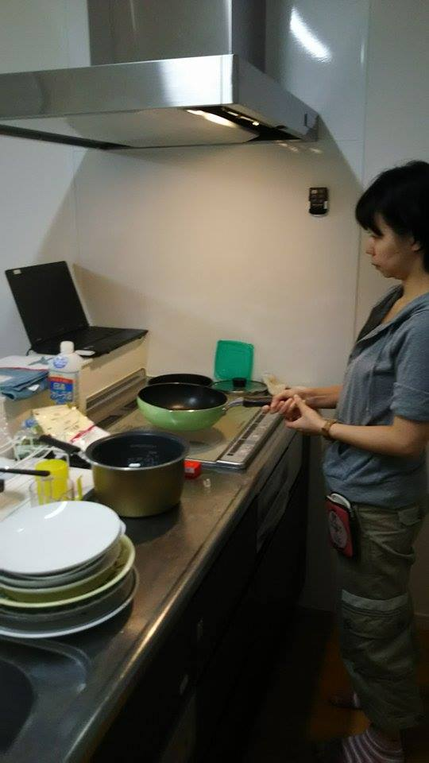

<<<<<<< HEAD
<!DOCTYPE html>
<html>
<head>
  <meta name="viewport"
        content="target-densitydpi=device-dpi, 
          width=device-width
          initial-scale = 1,
          minimum-scale = 1,
          maximum-scale = 1" />

  <link rel="stylesheet" href="stylesheets/home.css" />
    
  <script src="/libs/qimessaging/1.0/jquery.min.js"></script>
  <script src="/libs/qimessaging/1.0/socket.io.min.js"></script>
  <script src="/libs/qimessaging/1.0/qimessaging.js"></script>

  <script src="scripts/jquery.qimhelpers.js"></script>
    
  <script src="scripts/preload.js"></script>
  <script src="scripts/main.js"></script>
</head>
<body>
  <div class="page">
<!--    -->
    
    <div id="clearfix"></div>
  </div>

  <div class='preload-area'></div>
  <script src="scripts/configure.js"></script>
</body>
</html>
=======
<!DOCTYPE html>
<html lang="ja">
	<head>
		<meta charset="utf-8">
		<meta http-equiv="X-UA-Compatible" content="IE=edge">
		<meta name="viewport" content="width=device-width, initial-scale=1">
		<title>Pepper Action</title>
		<script src="https://ajax.googleapis.com/ajax/libs/jquery/2.1.3/jquery.min.js"></script>
		<!-- script src="websocket.js"></script -->
		<script src="/libs/qimessaging/1.0/qimessaging.js"></script>
		<script>
			// WebSocket or Ajaxによるポーリング切り替えフラグ
			// trueであれば、WebSocketを使う。
			var ws = new Boolean(true);
			/**
				WebSocketレスポンス受信時
			*/
			if (ws) {
				Connect("ws://localhost", onReceive);
			} else {
				// WebSocketでなければ、Ajaxによるポーリング処理を起動。
				setTimeout(fetchServer, 30000);
			}

			/*
				WebSocketの受信イベントハンドラ
			*/
			function onReceive(evt) {
				poke(evt.data);
			}

			/*
				メッセージ処理
			*/
			function poke(data) {
				var len = data.length;
				for (i = 0; i < len; i++) {
					if (data[i].Txt != "") {
						saytext(data[i].Txt);
					}
					if (data[i].Action != "") {
						someAction(data[i].Action);
					}
				}
			}

			function fetchServer() {
				$.ajax({
//					url: "http://163.221.14.161:3500/gomi",
					url:"http://163.221.14.161:3500/sabori",
//					url: "pepper.json",
					dataType: "json",
					cache: false,
					success: function(data){
//						$("#output").append(data);
						poke(data);
						setTimeout(fetchServer, 30000);	// 次のサーバーチェックタイミングをセット
					},
					error: function(data){
		//				$("#output").append("読み込み失敗<br />");
					}
				});
			}

			var session = new QiSession();
			// しゃべらせる
			function saytext(text){
				if (text == "") return;
				//	$("#output").append("ここで、Pepperが" + text + "と話します。<br />");
					session.service("ALMemory").done(function (ALMemory) {
					ALMemory.raiseEvent("PepperQiMessaging/fromtablet", text);
					});
			}

			// 画像変更
			function changeImage(action){
				var image = "img/" + action + "_1" + ".GIF";
			//				$("#output").append(image);
				$("img").attr("src", image);
			}

			// 動き
			function someAction(action){
					changeImage(action);
			//		$("#output").append("ここで、Pepperが" + action + "の動きをします。<br />");
					session.service("ALMemory").done(function (ALMemory) {
					ALMemory.raiseEvent("PepperQiAction/fromtablet",action);
					});
			}
		</script>
	</head>
	<body background="img/bg_pink.png">
		<!-- a href="http://163.221.14.161:3500/gomi">data</a -->
		<div id="output" align="center">
			
		</div>
	</body>
</html>
>>>>>>> origin/master
